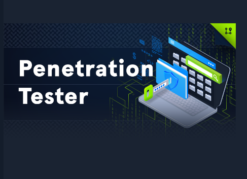

Introduction
Hey everyone!This will be my first publish, so be prepared to go through another HTB academy module-like blog. Before we get into the review let me just give a quick background about myself. My name in Nazeef Khan and at the time of this blog is being published I'm a MSc Cybersecurity Engineering student at University of Warwick. Besides being active on various cybersecurity platforms like HacktheBox and TryHackMe, I also possess PNPT by TCM security and have solved several prolabs. It all started in December when I joined an amazing cybersecurity community on Meetup that conducted regular streams and HacktheBox giveaways. Around mid-January, I was fortunate enough to win a Silver subscription voucher for the Academy platform. (PS. I had completed my PNPT in early January, 2024 and didn't want to pay for any certs out of my pocket anytime soon.) Unfortunately the community isn't active now :'( but I still cannot thank the HTB ambassador (Brainspiller) enough for giving me the voucher giving a boost to my learning.
About CPTS
The Certified Penetration Testing Specialist a.k.a CPTS by HacktheBox is a 10 day Exam that tests your ability to perform a complete penetration test on an organization. However, to get an exam attempt the student must mandatorily complete the daunting "Pentration Tester" pathway on Academy which has the best course material in my opinion(Updated on a regular basis). It not only prepares you for the exam but goes one step further in teaching several use-cases that have rarely been mentioned in materials of other training providers. Since, I got my voucher in a giveaway I'm noone to judge the pricepoint of the course materials and cert, but I wouldn't consider £350 which is close to ~$450 for an Silver annual subscription(Give access of modules upto Tier-2) and an exam attempt expensive. The exam consists of 14 flags(100%), and a student must obtain a total of 12(85%) flags to pass. Once the exam attempt is finished(doesn't matter if the student attained the passing score or not), the student is expected to submit a report within the 10 days exam window(which is a must else the student will not get a re-attempt). So students are expected to allocate sufficient time for reporting since the evaluators expect a commerical grade report(By commercial grade, I mean it because I had to submit mine again due to its shabby looks and formatting. This was because of time constraints and tiredness. Don't be like me). Moving on, I reedemed the voucher around the 25th of January all set to tackle the daunting Penetration Tester pathway.

The Modules
I started the pathway roughly around mid February and completed the entire path on 20th April. That's roughly 2 months of sleepness nights and me juggling between university coursework and academy. Before I start critiquing the modules, let me just add that just because I took 2 months doesn't mean you have to. You can finish it way faster or slower depending on various factors. And also may I add I did take hints and nudges from people all over HTB discord/forums and even reddit so if you have reached a dead-end taking nudges never hurts(Saves you a lot of time when you don't have to bang your head against the wall). Also may I add when I was nearing the end of the path HTB launched the walkthrough feature :( on their platform for their silver and gold subscription members which in my opinion was great idea since some labs were very difficult to tackle with without guidance. Starting out, every module on academy contains just text, A LOT OF TEXT. so people who prefer reading and learning this is a great place to start. Moreover the text in itself is very well detailed and structured. These text also contain reference to external blogs/articles by other authors. However, these modules can be quite distasteful for people who prefer visual based learning like TCM security. Adding on, sometimes the english in the module is quite tricky to grasp especially for people whose 1st language isn't english. HacktheBox has also done a great job in desiging the flow of the pathway where one starts of with the Nmap module and ends with Attacking Enterprise Network which might be the closest thing to the exam. However, to get more familiar I would also recommend completing Dante, Zephyr and AD 101 track on HacktheBox. Remember the path is the key to clearing the exam. Lastly, I would like to suggest a rework to the module "Password Attacks" since this modules just takes up a lot of unneccessary time due to wrong wordlist, wrong syntax and long waiting times for bruteforcing. Another module would be "Attacking Common Application" which basically teaches you alot of advanced information(Thick client) by just walking you through a INSANE level box. Another module where I would like to see more details added in the sections is "Linux Privilege Escalation" where I felt explanation in certain sections coudlv'e been brought out in a more readable/detailed way. Overall, the path completion in itself felt like an achievement despite not passing the exam the nourishment and knowledge I gained progressing through this path was immense.
Preparation
Apart from the modules which basically contains almost everything that I needed to pass the exam, I would also recommend one to the Dante and Zephyr pro labs by Hackthebox to get ones methodology right(Offshore just might be an overkill imo). I would also suggest one to finish the CPTS prep by ippsec and the AD 101 track (All these combined is around 27 machines). To really the apply concepts learnt one can also practice the machines towards the end of every module. However, I personally didn't do that and basic understanding of Active Directory comes from setting up the AD lab in the PEH course by Active Directory. This not only gave me a fundamental understanding of core concepts but also helps sharpen troubleshooting process which is a skill in my opinion too:). Below is how my notion template looks like which basically consists a list of compiled machines.

10 days of torture
So I started my exam attempt on 1st June, 2024 around 3pm(UK timezone) and managed to get the passing score on 7th June, 2024 towards the end of the day and oh my the exam environment never failed to amuse me. I got the passing score towards the end of 7th June, 2024 and had around 2 days to finish my report. Flag-9 is an emotion which took me around 24-30 hours on screen to complete.
Personally the flags in the exam are familiar when one has gone through the course materials. Also, I would suggest to try the same attack using multiple tools. One can just feel the wrath of the exam but trust me every obstacle teaches you something new and amazing, doesn't matter how experienced one is the key to passing is revising the modules and getting your basics right. I personally completed 13 flags in my first attempt and got the 14th flag on my next one.(but didn't submit it since I was lazy to write more in the report)
Smiling through the Pain
This part of the blog explains my experience reporting. Since I finished my exam towards the end of 7th day I had around 48 hours to write a professional report(Here my tiredness and sleepness kicked in) I forgot to provide crucial sections and evidences in my report, but this re-attempt gave me an oppoprtunity to go for the kill(The Final 14th Flag) and I did but didn't ask this flag into my report since I already had the passing score I didn't want to overburden myself and just wanted to make my report neat and tidy. But me personally I felt the refinement of report was neccessary since I wasn't satisfied on the first submission.
Another important lesson that the path teaches you is the value of patience and failure. I have stuck at a flags for around 2 days but when doing the path I understood the importance of not giving up and just learning to recover. If ever one feels that the exam is hard, trust me it's not! It's everything you've learnt during the path so just try to think dumber. Follow KISS(Keep it Simple and Stupid). I also managed to create a simple python scraper using the Beautiful library that scrapes out the number of people who have passed HTB certs. Every morning I used to make sure I run the script hoping for the best. You can find a link of it here. During my exam whenever I felt I reached a roadblock I just had to start fresh after taking a break giving me fresh ideas. Another I noticed with CPTS was that unlike PNPT where you get a nudge once you fail, the HTB staff merciless and they provide you with a generic feedback on what area should you improve on. That's pretty much it.
Conclusion
Overall, HacktheBox has done a great job in crafting the course and exam which is well structured and I'm confident that they are leading the industry in terms of cybersecurity education at the moment. If one has the willingness to learn and the right attitude they can navigate through the complexities of the path and the exam. Although, this blog in my experience about the cert but I hope this review helps others in their journey to Offensive cybersecurity. Feel free to reach out to me on my socials and I'll be happy to help and learn :)

Other Plans
Since most people consider this path by HTB as introductory I'm really looking forward to the Advanced CPTS cert. While my primary interest is in Red teaming, I've been exploring broader cybersecurity options. CRTO next maybe? :)